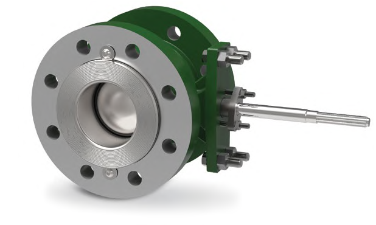
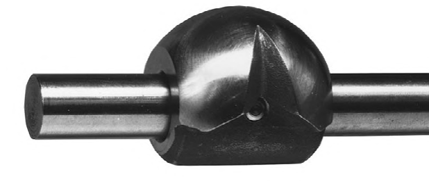
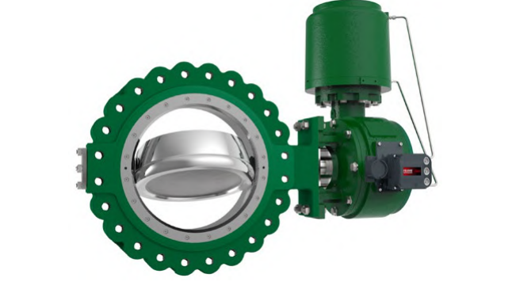

Rotary Closure-Member Types

A partial-sphere ball segment on a shaft, with a straight bore through it — the simplest of the three rotary closure members.
The most common segmented-ball type — a contoured V-shaped notch gives it the widest rangeability of the three.
A disk on an off-centre shaft cams clear of the seat as it opens — reducing friction and wear, the same family as a butterfly valve.After Control Valve Handbook, 6th ed., Figs. 1.14, 1.15, 1.16 — used directly. Component Index: cvh-cmp-segmented-ball, cvh-cmp-v-notch-ball, cvh-cmp-eccentric-disk-valve.